Ideally, it would be nice to develop a way to keep track of all the cause-and-effect relationships that are presumed to exist at the same time. From the previous chapters it is clear, for example, that the money supply affects the interest rates in the money market, which in turn affects the exchange rates in the foreign exchange (Forex) market, which in turn affects demand on the current account in the goods and services (G&S) market, which in turn affects the level of GNP, which in turn affects the money market, and so on. The same type of string of repercussions can be expected after many other changes that might occur. Keeping track of these effects and establishing the final equilibrium values would be a difficult task if not for a construction like the AA-DD model. This model merges the money market, the Forex market, and the G&S market into one supermodel. The construction of the AA-DD model is presented in this chapter.
This chapter describes the derivation and the mechanics of the AA-DD modelRepresents a synthesis of the foreign exchange market, the money market, and the goods and services market, showing their interconnectedness.. The AA-DD model represents a synthesis of the three previous market models: the foreign exchange (Forex) market, the money market, and the goods and services market. In a sense, there is really very little new information presented here. Instead, the chapter provides a graphical approach to integrate the results from the three models and to show their interconnectedness. However, because so much is going on simultaneously, working with the AA-DD model can be quite challenging.
The AA-DD model is described with a diagram consisting of two curves (or lines): an AA curveThe set of exchange rate and GNP combinations that maintain equilibrium in the asset markets, which is given fixed values for all other exogenous variables. representing asset market equilibriums derived from the money market and foreign exchange markets and a DD curveThe set of exchange rate and GNP combinations that maintain equilibrium in the goods and services market, which are given fixed values for all other exogenous variables. representing goods market (or demand) equilibriums. The intersection of the two curves identifies a market equilibrium in which each of the three markets is simultaneously in equilibrium. Thus we refer to this equilibrium as a superequilibriumDescribes the GNP level and exchange rate value at the intersection of the AA and DD curves. It represents the values that provide for equilibriums in the money market, the Forex market, and the G&S market simultaneously..
The main results of this section are descriptive and purely mechanical. The chapter describes the derivation of the AA and DD curves, explains how changes in exogenous variables will cause shifts in the curves, and explains adjustment from one equilibrium to another.
The AA-DD model will allow us to understand how changes in macroeconomic policy—both monetary and fiscal—can affect key aggregate economic variables when a country is open to international trade and financial flows while accounting for the interaction of the variables among themselves. Specifically, the model is used to identify potential effects of fiscal and monetary policy on exchange rates, trade balances, GDP levels, interest rates, and price levels both domestically and abroad. In subsequent chapters, analyses will be done under both floating and fixed exchange rate regimes.
Jeopardy Questions. As in the popular television game show, you are given an answer to a question and you must respond with the question. For example, if the answer is “a tax on imports,” then the correct question is “What is a tariff?”
The DD curve is derived by transferring information described in the goods and services (G&S) market model onto a new diagram to show the relationship between the exchange rate and equilibrium gross national product (GNP). The original G&S market, depicted in the top part of Figure 20.1 "Derivation of the DD Curve", plots the aggregate demand (AD) function with respect to changes in U.S. GNP (Y$). Aggregate demand is measured along the vertical axis and aggregate supply (or the GNP) is measured on the horizontal axis. As discussed in Chapter 19 "National Output Determination", Section 19.7 "The Aggregate Demand Function", the AD function is dependent upon several different exogenous variables, most notably the exchange rate between domestic and foreign currency (E$/£). However, AD is also affected by investment demand (I), government demand (G), government tax revenues (T), government transfer payments (TR), and the price level in the domestic (P$) and foreign (P£) countries. The endogenous variable in the model is U.S. GNP (Y$). (See Table 20.1 "G&S Market" for a quick reference.) In this exercise, since our focus is on the exchange rate, we label the AD function in Figure 20.1 "Derivation of the DD Curve" as AD(E$/£, …), where the ellipsis (…) is meant to indicate there are other unspecified variables that also influence AD.
Table 20.1 G&S Market
| Exogenous Variables | E$/£, I, G, T, TR, P$, P£ |
| Endogenous Variable | Y$ |
Figure 20.1 Derivation of the DD Curve
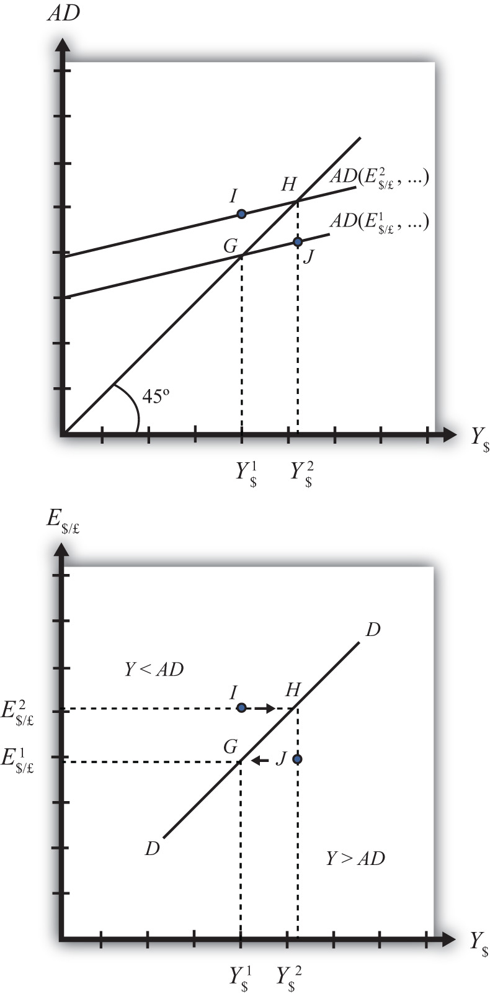Initially, let’s assume the exchange rate is at a value in the market given by E$/*1. We need to remember that all the other variables that affect AD are also at some initial level. Written explicitly, we could write AD as AD(E$/£1, I1, G1, T1, TR1, P$1, P£1). The AD function with exchange rate E$/£1 intersects the forty-five-degree line at point G which determines the equilibrium level of GNP given by Y$1. These two values are transferred to the lower diagram at point G determining one point on the DD curve (Y$1, E$/£1).
Next, suppose E$/£ rises from E$/£1 to E$/£2, ceteris paribus. This corresponds to a depreciation of the U.S. dollar with respect to the British pound. The ceteris paribus assumption means that investment, government, taxes, and so on stay fixed at levels I1, G1, T1, and so on. Since a dollar depreciation makes foreign G&S relatively more expensive and domestic goods relatively cheaper, AD shifts up to AD(E$/£2, …). The equilibrium shifts to point H at a GNP level Y$2. These two values are transferred to the lower diagram at point H, determining a second point on the DD curve (Y$2, E$/£2).
The line drawn through points G and H on the lower diagram is called the DD curve. The DD curve plots an equilibrium GNP level for every possible exchange rate that may prevail, ceteris paribus. Stated differently, the DD curve is the combination of exchange rates and GNP levels that maintain equilibrium in the G&S market, ceteris paribus. We can think of it as the set of aggregate demand equilibriums.
An equilibrium in an economic model typically corresponds to a point toward which the endogenous variable values will converge based on some behavioral assumption about the participants in the model. In this case, equilibrium is not represented by a single point. Instead every point along the DD curve is an equilibrium value.
If the economy were at a point above the DD curve, say, at I in the lower diagram, the exchange rate would be E$/£2 and the GNP level at Y$1. This corresponds to point I in the upper diagram where AD > Y, read off the vertical axis. In the G&S model, whenever aggregate demand exceeds aggregate supply, producers respond by increasing supply, causing GNP to rise. This continues until AD = Y at point H. For all points to the left of the DD curve, AD > Y, therefore the behavior of producers would cause a shift to the right from any point like I to a point like H on the DD curve.
Similarly, at a point such as J, to the right of the DD curve, the exchange rate is E$/£1 and the GNP level is at Y$2. This corresponds to point J in the upper diagram above where aggregate demand is less than supply (AD < Y). In the G&S model, whenever supply exceeds demand, producers respond by reducing supply, thus GNP falls. This continues until AD = Y at point G. For all points to the right of the DD curve, AD < Y, therefore the behavior of producers would cause a shift to the left from any point like J to a point like G on the DD curve.
A useful analogy is to think of the DD curve as a river flowing through a valley. (See the 3-D diagram in Figure 20.2 "A 3-D DD Curve".) The hills rise up to the right and left along the upward-sloping DD curve. Just as gravity will move a drop of water downhill onto the river valley, firm behavior will move GNP much in the same way: right or left to the lowest point along the DD curve.
Figure 20.2 A 3-D DD Curve
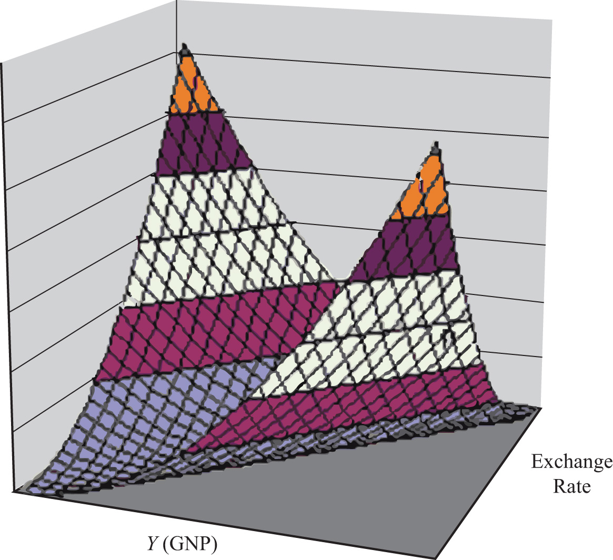Jeopardy Questions. As in the popular television game show, you are given an answer to a question and you must respond with the question. For example, if the answer is “a tax on imports,” then the correct question is “What is a tariff?”
The DD curve depicts the relationship between changes in one exogenous variable and one endogenous variable within the goods and services (G&S) market model. The exogenous variable assumed to change is the exchange rate. The endogenous variable affected is the gross national product (GNP). At all points along the DD curve, it is assumed that all other exogenous variables remain fixed at their original values.
The DD curve will shift, however, if there is a change in any of the other exogenous variables. We illustrate how this works in Figure 20.3 "DD Curve Effects from a Decrease in Investment Demand". Here, we assume that the level of investment demand in the economy falls from its initial level I1 to a lower level I2.
At the initial investment level (I1) and initial exchange rate (E$/£1) the AD curve is given by AD(…, E$/£1, I1, …). The AD curve intersects the forty-five-degree line at point G, which is transferred to point G on the DD curve below. If the investment level and all other exogenous variables remain fixed while the exchange rate increases to E$/£2, then the AD curve shifts up to AD(…, E$/£2, I1, …), generating the equilibrium points H in both diagrams. This exercise plots out the initial DD curve labeled DD|I1 in the lower diagram connecting points G and H. DD|I1 is read as “the DD curve given that I = I1.”
Figure 20.3 DD Curve Effects from a Decrease in Investment Demand
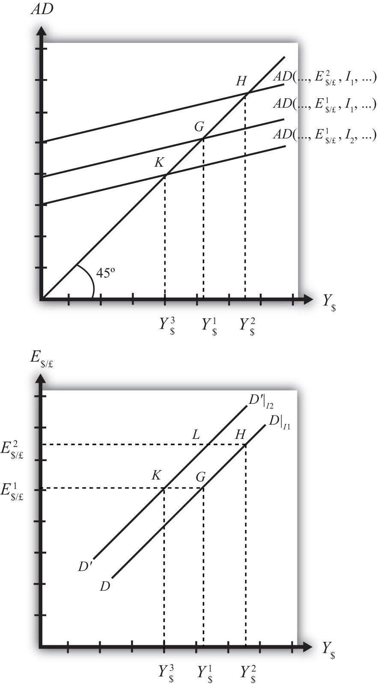Now, suppose I falls to I2. The reduction in I leads to a reduction in AD, ceteris paribus. At the exchange rate E$/£1, the AD curve will shift down to AD(…, E$/£1, I2, …), intersecting the forty-five-degree line at point K. Point K above, which corresponds to the combination (E$/£1, I2), is transferred to point K on the lower diagram. This point lies on a new DD curve because a second exogenous variable, namely I, has changed. If we maintain the investment level at I2 and change the exchange rate up to E$/£2, the equilibrium will shift to point L (shown only on the lower diagram), plotting out a whole new DD curve. This DD curve is labeled D′D′|I2, which means “the DD curve given is I = I2.”
The effect of a decrease in investment demand is to lower aggregate demand and shift the DD curve to the left. Indeed, a change in any exogenous variable that reduces aggregate demand, except the exchange rate, will cause the DD curve to shift to the left. Likewise, any change in an exogenous variable that causes an increase in aggregate demand will cause the DD curve to shift right. An exchange rate change will not shift DD because its effect is accounted for by the DD curve itself. Note that curves or lines can shift only when a variable that is not plotted on the axis changes.
The following table presents a list of all variables that can shift the DD curve right and left. The up arrow indicates an increase in the variable, and the down arrow indicates a decrease.
| DD right-shifters | ↑G ↑I ↓T ↑TR ↓P$ ↑P£ |
| DD left-shifters | ↓G ↓I ↑T ↓TR ↑P$ ↓P£ |
Refer to Chapter 19 "National Output Determination" for a complete description of how and why each variable affects aggregate demand. For easy reference, recall that G is government demand, I is investment demand, T refers to tax revenues, TR is government transfer payments, P$ is the U.S. price level, and P£ is the foreign British price level.
Identify whether the DD curve shifts in response to each of the following changes. Indicate whether the curve shifts up, down, left, or right. Possible answers are DD right, DD left, or neither.
The AA curve is derived by transferring information described in the money market and foreign exchange market models onto a new diagram to show the relationship between the exchange rate and equilibrium GNP. (At this point we will substitute GNP for its virtually equivalent measure, GDP, as a determinant of real money demand.) Since both models describe supply and demand for money, which is an asset, I’ll refer to the two markets together as the asset market. The foreign exchange market, depicted in the top part of Figure 20.4 "Derivation of the AA Curve", plots the rates of return on domestic U.S. assets (RoR$) and foreign British assets (RoR£). (See Chapter 16 "Interest Rate Parity", Section 16.3 "Forex Equilibrium with the Rate of Return Diagram" for a complete description.) The domestic U.S. money market, in the lower quadrant, plots the real U.S. money supply (M$S/P$) and real money demand (L(i$, Y$)). The asset market equilibriums have several exogenous variables that determine the positions of the curves and the outcome of the model. These exogenous variables are the foreign British interest rate (i£) and the expected future exchange rate (E$/£e), which influence the foreign British rate of return (RoR£); the U.S. money supply (M$S) and domestic U.S. price level (P$), which influence real money supply; and U.S. GNP (Y$), which influences real money demand. The endogenous variables in the asset model are the domestic interest rates (i$) and the exchange rate (E$/£). See Table 20.2 "Asset Market (Money + Forex)" for easy reference.
Figure 20.4 Derivation of the AA Curve
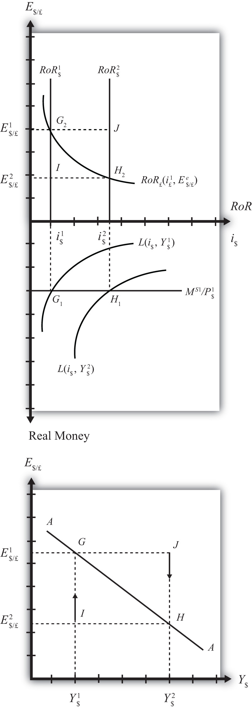Table 20.2 Asset Market (Money + Forex)
| Exogenous Variables | i£, E$/£e, M$S, P$, Y$ |
| Endogenous Variables | i$, E$/£ |
Initially, let’s assume GNP is at a value in the market given by Y$1. We need to remember that all the other exogenous variables that affect the asset market are also at some initial level such as i£1, E$/£e1, M$ S1, and P$1. The real money demand function with GNP level Y$1 intersects with real money supply at point G1 in the money market diagram determining the interest rate i$1. The interest rate in turn determines RoR$1, which intersects with RoR£ at point G2, determining the equilibrium exchange rate E$/£1. These two values are transferred to the lowest diagram at point G, establishing one point on the AA curve (Y$1, E$/£1).
Next, suppose GNP rises, for some unstated reason, from Y$1 to Y$, ceteris paribus. The ceteris paribus assumption means that all exogenous variables in the model remain fixed. Since the increase in GNP raises real money demand, L(i$, Y$), it shifts out to L(i$, Y$2). The equilibrium shifts to point H1, raising the equilibrium interest rate to i$2. The RoR$ line shifts right with the interest rate, determining a new equilibrium in the Forex at point H2 with equilibrium exchange rate E$/£2. These two values are then transferred to the diagram below at point H, establishing a second point on the AA curve (Y$2, E$/£2).
The line drawn through points G and H on the lower diagram in Figure 20.4 "Derivation of the AA Curve" is called the AA curve. The AA curve plots an equilibrium exchange rate for every possible GNP level that may prevail, ceteris paribus. Stated differently, the AA curve is the combination of exchange rates and GNP levels that maintain equilibrium in the asset market, ceteris paribus. We can think of it as the set of aggregate asset equilibriums.
If the economy were at a point off the AA curve, like at I in the lower diagram, the GNP level is at Y$1 and the exchange rate is E$/£2. This corresponds to point I in the upper diagram where RoR£ > RoR$. In the Forex model, when foreign assets have a higher rate of return than domestic assets, investors respond by buying pounds in exchange for dollars in the foreign exchange market. This leads to a depreciation of the dollar and an increase in E$/£. This continues until RoR£ = RoR$ at point G. For all points below the AA curve, RoR£ > RoR$; therefore, the behavior of investors would cause an upward adjustment toward the AA curve from any point like I to a point like G.
Similarly, at a point such as J, above the DD curve, the GNP level is at Y2 and the exchange rate is E$/£1. This corresponds to point J in the upper diagram where RoR$ > RoR£ and the rate of return on dollar assets is greater than the rate of return abroad. In the Forex model, when U.S. assets have a higher rate of return than foreign assets, investors respond by buying dollars in exchange for pounds in the foreign exchange market. This leads to an appreciation of the dollar and a decrease in E$/£. This continues until RoR£= RoR$ at point H. For all points above the AA curve, RoR$ > RoR£; therefore, the behavior of investors would cause a downward adjustment to the AA curve from a point like J to a point like H.
Figure 20.5 A 3-D AA Curve
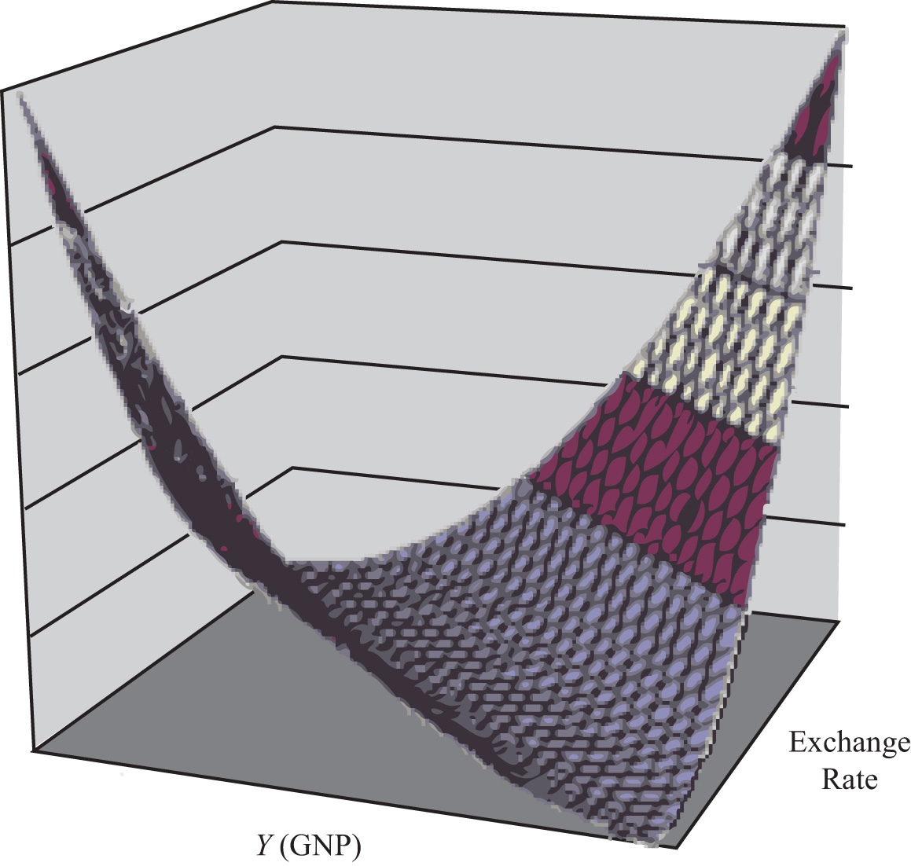As with the DD curve, it is useful to think of the AA curve as a river flowing through a valley. (See the 3-D diagram in Figure 20.5 "A 3-D AA Curve".) The hills rise up both above and below. Just as gravity will move a drop of water down the hill to the river valley, in much the same way, investor behavior will move the exchange rate up or down to the lowest point lying on the AA curve.
Jeopardy Questions. As in the popular television game show, you are given an answer to a question and you must respond with the question. For example, if the answer is “a tax on imports,” then the correct question is “What is a tariff?”
The AA curve depicts the relationship between changes in one exogenous variable and one endogenous variable within the asset market model. The exogenous variable changed is gross national product (GNP). The endogenous variable affected is the exchange rate. At all points along the AA curve, it is assumed that all other exogenous variables remain fixed at their original values.
The AA curve will shift if there is a change in any of the other exogenous variables. We illustrate how this works in Figure 20.6 "AA Curve Effects from a Decrease in the Money Supply", where we assume that the money supply in the economy falls from its initial level MS1 to a lower level MS2.
Figure 20.6 AA Curve Effects from a Decrease in the Money Supply
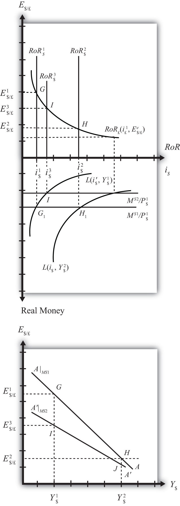At the initial money supply (MS1) and initial GNP level Y$1, real money demand intersects real money supply at point G, determining the interest rate i$1. This in turn determines the rate of return on U.S. assets, RoR$1, which intersects the foreign British RoR£ at G in the upper diagram, determining the equilibrium exchange rate E$/£1. If the money supply and all other exogenous variables remain fixed, while GNP increases to Y$2, the equilibriums shift to points H in the lower and upper diagrams, determining exchange rate E$/£2. This exercise plots out the initial AA curve labeled AA|MS1 in the lower diagram connecting points G and H. Note, AA|MS1 is read as “the AA curve given that MS = MS1.”
Now, suppose the money supply MS falls to MS2. The reduction in MS leads to a reduction in the real money supply, which, at GNP level Y$1, shifts the money market equilibrium to point I, determining a new interest rate, i$3. In the Forex market, the rate of return rises to RoR$3, which determines the equilibrium exchange rate E$/£3. The equilibriums at points I corresponding to the combination (Y$1, E$/£3) are transferred to point I on the lower diagram. This point lies on a new AA curve because a second exogenous variable, namely, MS, has changed. If we maintain the money supply at MS2 and change the GNP up to Y$2, the equilibrium will shift to point J (shown only on the lower diagram), plotting out a whole new AA curve. This AA curve is labeled A′A′|MS2, which means “the AA curve given that MS = MS2.”
The effect of a decrease in the money supply is to shift the AA curve downward. Indeed, a change in any exogenous variable in the asset markets that reduces the equilibrium exchange rate, except a change in GNP, will cause the AA curve to shift down. Likewise, any change in an exogenous variable that causes an increase in the exchange rate will cause the AA curve to shift up. A change in GNP will not shift AA because its effect is accounted for by the AA curve itself. Note that curves or lines can shift only when a variable not plotted on the axis changes.
The following table presents a list of all variables that can shift the AA curve up and down. The up arrow indicates an increase in the variable, and a down arrow indicates a decrease.
| AA up-shifters | ↑MS ↓P$ ↑i£ ↑E$/£e |
| AA down-shifters | ↓MS ↑P$ ↓i£ ↓E$/£e |
Refer to Chapter 16 "Interest Rate Parity" and Chapter 18 "Interest Rate Determination" for a complete description of how and why each variable affects the exchange rate. For easy reference though, recall that MS is the U.S. money supply, P$ is the U.S. price level, i£ is the foreign British interest rate, and E$/£e is the expected future exchange rate.
Identify whether the AA curve shifts in response to each of the following changes. Indicate whether the curve shifts up, down, left, or right. Possible answers are AA right, AA left, or neither.
The DD curve represents the set of equilibriums in the goods and services (G&S) market. It describes an equilibrium gross national product (GNP) level for each and every exchange rate that may prevail. Due to the assumption that firms respond to excess demand by increasing supply (and to excess supply by decreasing supply), GNP rises or falls until the economy is in equilibrium on the DD curve.
The AA curve represents the set of equilibriums in the asset market. It indicates an equilibrium exchange rate for each and every GNP level that might prevail. Due to the assumption that investors will demand foreign currency when the foreign rate of return exceeds the domestic return and that they will supply foreign currency when the domestic rate of return exceeds the foreign return, the exchange rate will rise or fall until the economy is in equilibrium on the AA curve.
Since both the G&S market and the asset markets are operating concurrently, equilibriums in both markets can only occur where the DD curve intersects the AA curve. This is shown in Figure 20.7 "AA-DD Superequilibrium" at point F, with equilibrium GNP (_$) and exchange rate (Ê$/£). It is worth emphasizing that at point F, the three markets—that is, the G&S market, the money market, and the foreign exchange market—are in equilibrium simultaneously. For this reason, point F is more than a plain old equilibrium; instead it is a superequilibrium.
Figure 20.7 AA-DD Superequilibrium
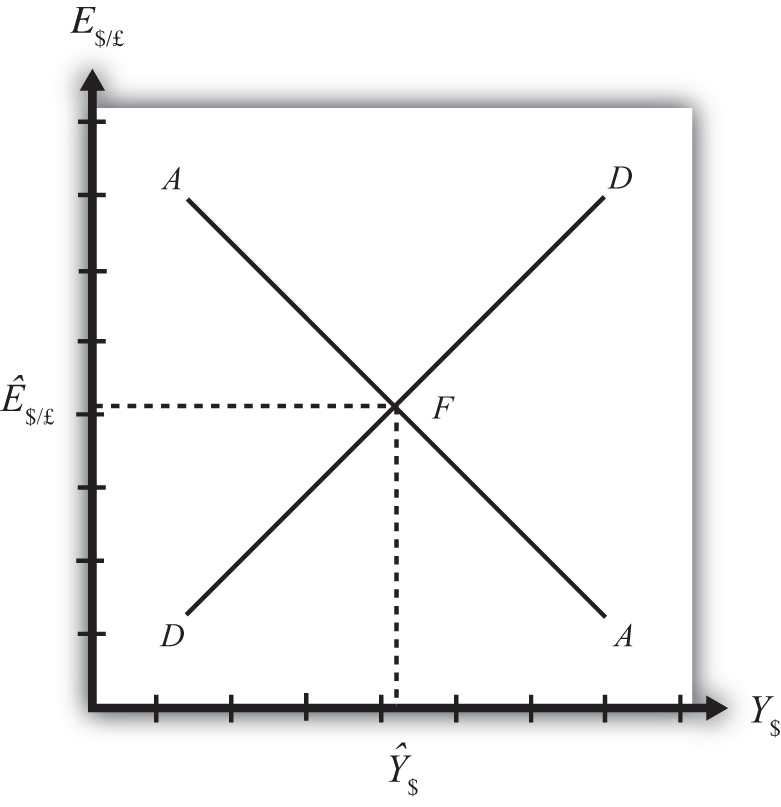The superequilibrium point is where we would expect behavioral responses by firms, households, and investors to move the exchange rate and GNP level, assuming the exogenous variables remain fixed at their original levels and assuming sufficient time is allowed for adjustment to the equilibrium to take place.
The equilibrium at F is like the lowest point of two intersecting valleys that reach their combined lowest point at a pool where the two valleys meet. A 3-D rendition of this is shown in Figure 20.8 "A 3-D AA-DD Depiction". The steepness of the valleys is meant to represent the speed of adjustment. Thus the AA valley is drawn much steeper than the DD valley to reflect the much more rapid adjustment in the asset markets in comparison to goods market adjustment. Anytime the economy is away from the equilibrium, forces will act to move it to the pool in the center. However, as will be shown later, adjustment to the AA curve will occur much faster than adjustment to the DD curve.
Figure 20.8 A 3-D AA-DD Depiction
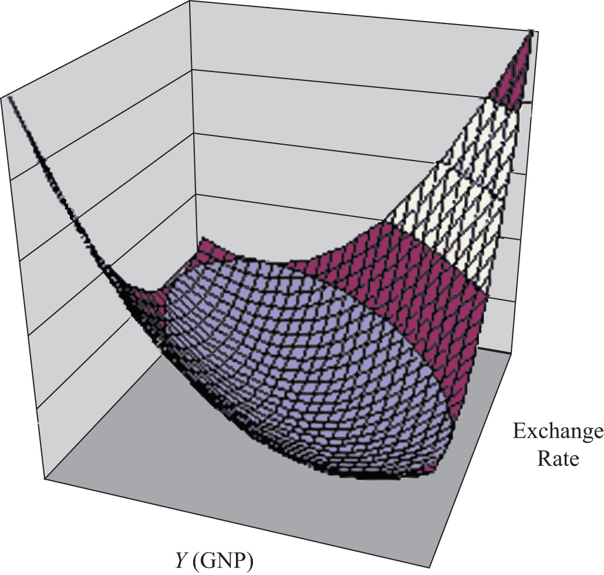Jeopardy Questions. As in the popular television game show, you are given an answer to a question and you must respond with the question. For example, if the answer is “a tax on imports,” then the correct question is “What is a tariff?”
In order to discuss adjustment to the superequilibrium, we must first talk about how an economy can end up out of equilibrium. This will occur anytime there is a change in one or more of the exogenous variables that cause the AA or DD curves to shift. In a real economy, we should expect these variables to be changing frequently. Variables such as interest rates will certainly change every day. A variable such as the average expected future exchange rate held by investors probably changes every minute. Each time an exogenous variable changes, the superequilibrium point will shift, setting off behavioral responses by households, businesses, and investors that will affect the exchange rate and gross national product (GNP) in the direction of the new superequilibrium. However, as we will indicate below, the adjustment process will take time, perhaps several months or more, depending on the size of the change. Since we should expect that as adjustment to one variable change is in process, other exogenous variables will also change, we must recognize that the superequilibrium is really like a moving target. Each day, maybe each hour, the target moves, resulting in a continual adjustment process.
Although an equilibrium may never be reached in the real-world economy, the model remains very useful in understanding how changes in some variables will affect the behavior of agents and influence other variables. The model in essence offers us the opportunity to conduct experiments in simplified settings. Changing one exogenous variable and inferring its effect is a comparative statics experiment because of the ceteris paribus assumption. Ceteris paribus allows us to isolate one change and work through its impact with certainty that nothing else could influence the result.
Below, we’ll consider adjustment to two changes: a reduction in investment demand, which shifts the DD curve, and an increase in foreign interest rates, which shifts the AA curve.
Consider adjustment to a decrease in investment demand. Begin with an original superequilibrium, where DD crosses AA at point F with GNP at Y$1 and exchange rate at E$/£1. When investment decreases, ceteris paribus, the DD curve shifts to the left, as was shown in Chapter 20 "The AA-DD Model", Section 20.3 "Shifting the DD Curve". This shift is shown in Figure 20.9 "Effects of an Investment Demand Decrease in the AA-DD Model" as a shift from DD to D′D′.
Figure 20.9 Effects of an Investment Demand Decrease in the AA-DD Model
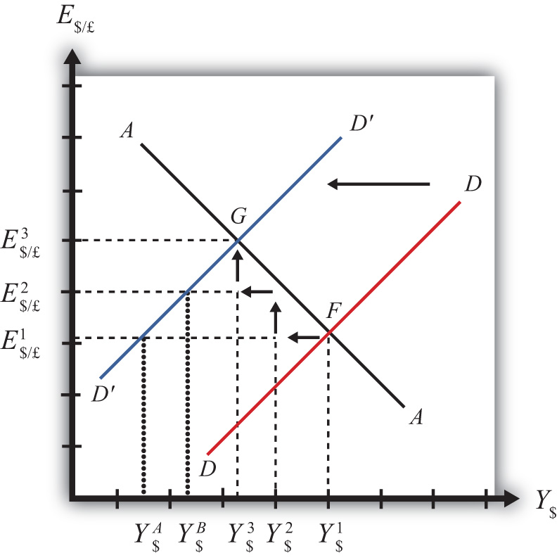The quick result is that the equilibrium shifts to point G, GNP falls to Y$3, and the exchange rate rises to E$/£3. The increase in the exchange rate represents a depreciation of the U.S. dollar value. However, this result does not explain the adjustment process, so let’s take a more careful look at how the economy gets from point F to G.
Step 1: When investment demand falls, aggregate demand falls short of aggregate supply, leading to a buildup of inventories. Firms respond by cutting back supply, and GNP slowly begins to fall. Initially, there is no change in the exchange rate. On the graph, this is represented by a leftward shift from the initial equilibrium at point F (Y$1 to Y$2). Adjustment to changes in aggregate demand will be gradual, perhaps taking several months or more to be fully implemented.
Step 2: As GNP falls, it causes a decrease in U.S. interest rates. With lower interest rates, the rate of return on U.S. assets falls below that in the United Kingdom and international investors shift funds abroad, leading to a dollar depreciation (pound appreciation)—that is, an increase in the exchange rate E$/£. This moves the economy upward, back to the AA curve. The adjustment in the asset market will occur quickly after the change in interest rates, so the leftward shift from point F in the diagram results in adjustment upward to regain equilibrium in the asset market on the AA curve.
Step 3: Continuing reductions in GNP caused by excess aggregate demand, results in continuing decreases in interest rates and rates of return, repeating the stepwise process above until the new equilibrium is reached at point G in the diagram.
During the adjustment process, there are several other noteworthy changes taking place. At the initial equilibrium, when investment demand first falls, aggregate supply exceeds demand by the difference of Y$2 − Y$A. Adjustment in the goods market will be trying to reachieve equilibrium by getting back to the DD curve. However, the economy will never get to Y$A. That’s because the asset market will adjust in the meantime. As GNP falls, the exchange rate is pushed up to get back onto the AA curve. Remember, that asset market adjustment takes place quickly after an interest rate change (perhaps in several hours or days), while goods market adjustment can take months. When the exchange rate rises, the dollar depreciation makes foreign goods more expensive and reduces imports. It also makes U.S. goods cheaper to foreigners and stimulates exports, both of which cause an increase in current account demand. This change in demand is represented as a movement along the new D′D′ curve. Thus when the exchange rate rises up to E$/£2 during the adjustment process, aggregate demand will have risen from Y$A to Y$B along the new D′D′ curve. In other words, the “target” for GNP adjustment moves closer as the exchange rate rises. In the end, the target for GNP reaches Y$3 just as the exchange rate rises to E$/£3.
Consider adjustment to an increase in the foreign interest rate, i£. Begin with an original superequilibrium where DD crosses AA at point F with GNP at Y1 and exchange rate at E$/£1. When the foreign interest rate increases, ceteris paribus, the AA curve shifts upward, as was shown in Chapter 20 "The AA-DD Model", Section 20.5 "Shifting the AA Curve". This shift is shown in Figure 20.10 "Effects of an Increase in Foreign Interest Rates in the AA-DD Model" as a shift from AA to A′A′.
Figure 20.10 Effects of an Increase in Foreign Interest Rates in the AA-DD Model
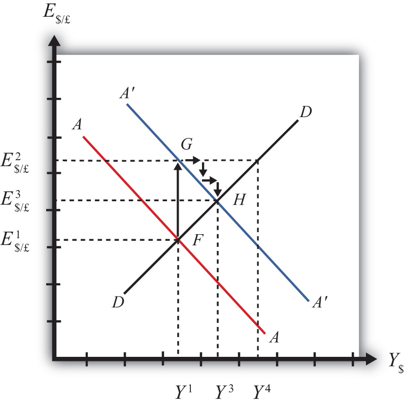The quick result is that the equilibrium shifts to point H, GNP rises to Y3, and the exchange rate rises to E3. The increase in the exchange rate represents a depreciation of the U.S. dollar value.
The convenience of the graphical approach is that it allows us to quickly identify the final outcome using only our knowledge about the mechanics of the AA-DD diagram. However, this quick result does not explain the adjustment process, so let’s take a more careful look at how the economy gets from point F to H.
Step 1: When the foreign interest rate (i£) rises, the rate of return on foreign British assets rises above the rate of return on domestic U.S. assets in the foreign exchange market. This causes an immediate increase in the demand for foreign British currency, causing an appreciation of the pound and a depreciation of the U.S. dollar. Thus the exchange rate (E$/£) rises. This change is represented by the movement from point F to G on the AA-DD diagram. The AA curve shifts up to reflect the new set of asset market equilibriums corresponding to the now-higher foreign interest rate. Since the foreign exchange market adjusts very swiftly to changes in interest rates, the economy will not remain off the new A′A′ curve for very long.
Step 2: Now that the exchange rate has risen to E$/£2, the real exchange has also increased. This implies foreign goods and services are relatively more expensive while U.S. G&S are relatively cheaper. This will raise demand for U.S. exports, curtail demand for U.S. imports, and result in an increase in current account and thereby aggregate demand. Note that the new equilibrium demand at exchange rate is temporarily at GNP level Y4, which is on the DD curve given the exchange rate E$/£2. Because aggregate demand exceeds aggregate supply, inventories will begin to fall, stimulating an increase in production and thus GNP. This is represented by a rightward shift from point G (small arrow).
Step 3: As GNP rises, so does real money demand, causing an increase in U.S. interest rates. With higher interest rates, the rate of return on U.S. assets rises above that in the United Kingdom and international investors shift funds back to the United States, leading to a dollar appreciation (pound depreciation), or the decrease in the exchange rate (E$/£). This moves the economy downward, back to the A′A′ curve. The adjustment in the asset market will occur quickly after the change in interest rates. Thus the rightward shift from point G in the diagram results in quick downward adjustment to regain equilibrium in the asset market on the A′A′ curve, as shown.
Step 4: Continuing increases in GNP caused by excess aggregate demand, results in continuing increases in U.S. interest rates and rates of return, repeating the stepwise process above until the new equilibrium is reached at point H in the diagram.
During the adjustment process, there are several other noteworthy changes taking place. At point G, aggregate demand exceeds supply by the difference Y4 − Y1. Adjustment in the goods market will be trying to reachieve equilibrium by getting back to the DD curve. However, the economy will never get to Y4. That’s because the asset market will adjust during the transition. As GNP rises, the exchange rate is gradually pushed down to get back onto the A′A′ curve. When the exchange rate falls, the dollar appreciation makes foreign goods cheaper, raising imports. It also makes U.S. goods more expensive to foreigners, reducing exports—both of which cause a decrease in current account demand. This change in demand is represented as a movement along the DD curve. Thus when the exchange rate falls during the adjustment process, aggregate demand falls from Y4 along the DD curve. In other words, the “target” for GNP adjustment moves closer as the exchange rate falls. In the end, the target for GNP reaches Y3 just as the exchange rate falls to E$/£3.
Jeopardy Questions. As in the popular television game show, you are given an answer to a question and you must respond with the question. For example, if the answer is “a tax on imports,” then the correct question is “What is a tariff?”
In later chapters we will use the AA-DD model to describe the effects of policy changes on macroeconomic variables in an open economy. The two most important macro variables are the exchange rate and the current account (trade) balance. The effects of changes on the exchange rate are vividly portrayed in the AA-DD diagram since this variable is plotted along the vertical axis and its value is determined as an element of the equilibrium. The current account (CA) variable is not displayed in the AA-DD diagram, but with some further thought we can devise a method to identify the current account balance at different positions in the AA-DD diagram.
First, note that there is no “equilibrium” current account balance in a floating exchange rate system. Any balance on the current account is possible because any balance can correspond to balance on the balance of payments. The balance of payments is made up of two broad subaccounts: the current account and the financial account, the sum of whose balances must equal zero. When the balances sum to zero, the foreign demand for domestic goods, services, income, and assets is equal to domestic supply of goods, services, income, and assets. Thus there must always be “balance” on the balance of payments regardless of the balances on the individual subaccounts.
An iso-CAB lineA line drawn on an AA-DD diagram representing a set of points along which the current account balance (CAB) is the same. is a line drawn on an AA-DD diagram, Figure 20.11 "Iso-CAB Lines in an AA-DD Diagram", representing a set of points along which the current account balance (CAB) is the same. Note that “iso” is a prefix that means the same. In the adjoining diagram, we have superimposed three-dotted iso-CAB lines labeled CC, C′C′, and C″C″. Each line represents a set of GNP and exchange rate combinations that generate the same balance on the current account. The higher the CAB line, the larger is the balance on the current account. Thus the CAB balance on C″C″ is greater than the balance along CC. Also note that each CAB line is positively sloped with a slope less than the slope of the DD curve. Next, we’ll continue with a justification for this description.
Figure 20.11 Iso-CAB Lines in an AA-DD Diagram
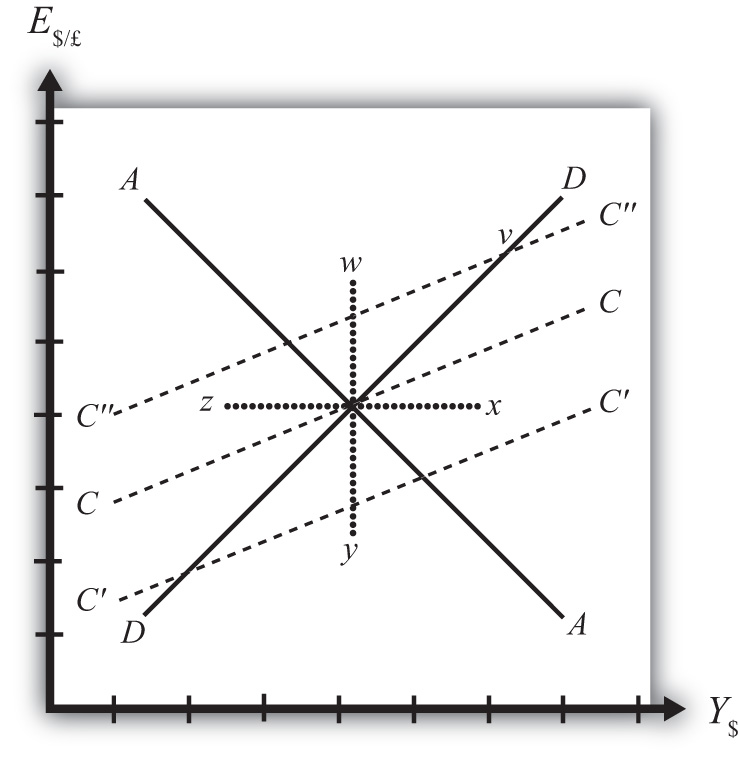Consider the superequilibrium point at the intersection of AA and DD. The positions of these two curves are determined by the values of the exogenous variables in the model, including the domestic price level (P$), the foreign price level (P£), tax revenues (T), and transfer payments (TR), among others. The intersection of the two curves determines the equilibrium GNP level (Y$) and the exchange rate (E$/£) (not labeled in diagram). Recall from Chapter 20 "The AA-DD Model", Section 20.2 "Derivation of the DD Curve" that the DD curve is derived from the aggregate demand function, one component of which is the current account function. The current account function, as shown below, is a function of all the variables listed immediately above:
Thus at the intersection of AA and DD there are presumed known values for the exogenous variables and determined values for the endogenous variables, E$/£ and Y$.
All these values could, in principle, be plugged into the current account demand function (CAD) to determine the CA balance at the equilibrium. Let’s assume that value is given by K, as shown in the above expression.
Now let’s consider movements in the superequilibrium to other points on the diagram. Let’s suppose that the equilibrium moved to point x directly to the right. That could arise from a rightward shift of DD and an upward shift of AA. We will also assume that this shift did not arise due to changes in P$, P£, T, or TR, the other exogenous variables that affect the current account. (More on this issue below.) One possibility is an increase in the money supply and an increase in investment demand. Note that these shifts are not depicted.
At point x, GNP is higher while the exchange rate and the other exogenous variables are the same as before. Since an increase in Y$ raises disposable income, which reduces current account demand, the current account balance must be at a lower level at point x compared to the initial equilibrium.
If the equilibrium had shifted to point z instead, then GNP is lower while the exchange rate and the other exogenous variables are the same as before. Since a decrease in Y$ lowers disposable income, which raises current account demand, the current account balance must be at a higher level at point z compared to the initial equilibrium.
Next, suppose the equilibrium had shifted to point y instead. In this case, the exchange rate (E$/£) is lower while GNP and the other exogenous variables are the same as before. Since a decrease in E$/£ reduces the real exchange rate, which reduces current account demand, the current account balance must be at a lower level at point y compared to the initial equilibrium.
Finally, suppose the equilibrium had shifted to point w. In this case, the exchange rate, E$/£, is higher while GNP and the other exogenous variables are the same as before. Since an increase in E$/£ raises the real exchange rate, which increases current account demand, the current account balance must be at a higher level at point y compared to the initial equilibrium.
Since a movement to w and z results in an increase in the current account balance, while a shift to x or y causes a reduction in the balance, the line representing a constant CAB must be positively sloped.
Another way to see this is to use the CAD function above. Suppose the CAB is originally at the value K. If the exchange rate (E$/£) rises, ceteris paribus, then CA will rise. We can now ask how GNP would have to change to get back to a CA balance of K. Clearly, if Y rises, disposable income rises and the current account balance falls. Raise GNP by precisely the right amount, and we can get the CAB back to K. Thus an increase in E$/£ must accompany an increase in GNP to maintain a fixed current account balance and therefore an iso-CAB line must be positively sloped.
The last thing we need to show is that the iso-CAB line is less steeply sloped than the DD line. Suppose the economy moved to a point such as v, which is on the same DD curve as the original superequilibrium. Recall from Chapter 20 "The AA-DD Model", Section 20.2 "Derivation of the DD Curve", the DD curve is derived from a change in the exchange rate and its effect on equilibrium GNP in the G&S market alone. The increase in the exchange rate causes an increase in current account demand through its effect on the real exchange rate. This causes an increase in aggregate demand, which inspires the increase in GNP. When equilibrium is reached in the G&S market, at point v, aggregate supply, Y, will equal aggregate demand and the following expression must hold:
The left side is aggregate supply given by the equilibrium value at point v and the right side is aggregate demand. Since GNP is higher at v, consumption demand (CD) must also be higher. However, because the marginal propensity to consume is less than one, not all the extra GNP will be spent on consumption goods; some will be saved. Nevertheless, aggregate demand (on the right side) must rise up to match the increase in supply on the left side. Since all the increase in demand cannot come from consumption, the remainder must come from the current account. This implies that a movement along the DD curve to v results in an increase in the current account balance. It also implies that the iso-CAB line must be less steeply sloped than the DD curve.
The iso-CAB line can be used to assess the change in the country’s current account balance from any exogenous variable change except changes in P$, P£, T, and TR. The reason we must exclude these variables is because the current account demand function is also dependent on these exogenous variables. If tax revenues increased, for example, all the iso-CAB lines would shift, making it much more difficult to pinpoint the final effect on the current account balance.
However, for monetary policy changes and government spending fiscal policy changes, the iso-CAB line will work. Anytime the superequilibrium shifts above the original iso-CAB line, the economy will move onto another iso-CAB line with a higher balance. (This is like the shift to point v in Figure 20.11 "Iso-CAB Lines in an AA-DD Diagram".) Recall that the CA = EX − IM, which can be positive or negative. If CAB were in surplus originally, an increase in the CAB (as with a movement to v) would imply an increase in the CA surplus. However, if the CAB were in deficit originally, then an increase in CAB implies a reduction in the deficit. If the increase in the CAB were sufficiently large, the CAB could move from deficit to surplus.
In a similar way, anytime the superequilibrium shifts below an initial iso-CAB line, the CAB surplus will fall, or the CAB deficit will rise.
Remember that the iso-CAB line is only used a reference to track the current account balance. The iso-CAB line is not used to determine the superequilibrium. For this reason, the iso-CAB line is plotted as a dashed line rather than a solid line.
Jeopardy Questions. As in the popular television game show, you are given an answer to a question and you must respond with the question. For example, if the answer is “a tax on imports,” then the correct question is “What is a tariff?”